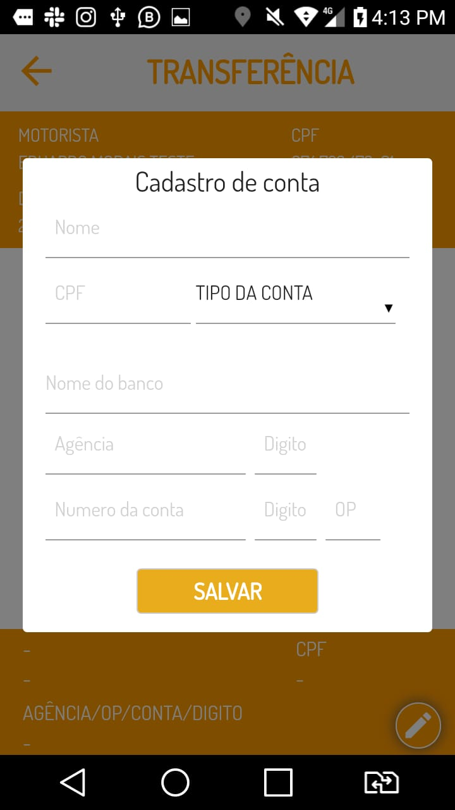

Para ativar seu aplicativo return e começar a receber solicitação de corridas
basta arrastar o botão "ativado" até o botão "desativado", fazendo isso você já estará apto a receber corridas.
como ativo meu aplicativo?
Para ativar seu aplicativo return e começar a receber solicitação de corridas
basta arrastar o botão "ativado" até o botão "desativado", fazendo isso você já estará apto a receber
corridas.
o que são os pontos de retorno?

Os pontos de retorno são um meio de fazer com que o motorista lucre mais e gaste menos ao tiver voltando para casa por exemplo você pode ativar o modo retorno para receber corridas de
pessoas que estão indo na mesma direção que você, economizando e ganhando mais! Para ativar o modo retorno você tem apenas que clicar no botão OFF, ativando assim o modo.
Como vejo minhas corridas?

Para visualizar suas corridas toque em menu ( 3 traços no superior direito) em seguida toque em "Corridas" podendo assim visualizar as mesmas. No lado superior direito há um menu (3 traços) no qual
você pode filtrar suas corridas podendo assim ter uma melhor visuali
Como realizo transferências?

Para realizar transferências você deve tocar no botão menu, e em seguida "conta", logo depois em "transfere" e então adicionar as informações de seu sua instituição financeira, e clicar em salvar.
Como indico o return para alguém?

Você pode facilmente indicar o app return para seus amigos e futuros clientes, basta clicar em menu e logo em seguida tocar em "indicar cliente" ou "indicar motorista" caso queira indicar um
motorista. depois digite o número da pessoa a qual você deseja indicar, e qual opção, podendo ser por SMS ou whatsapp.
Como edito meu perfil?

Para editar seu perfil (mudar foto, apelido, telefone, senha e etc) você pode tocar em menu e logo em seguida clicar em "perfil" realizando as mudanças que você deseja. Depois basta tocar em "salvar"